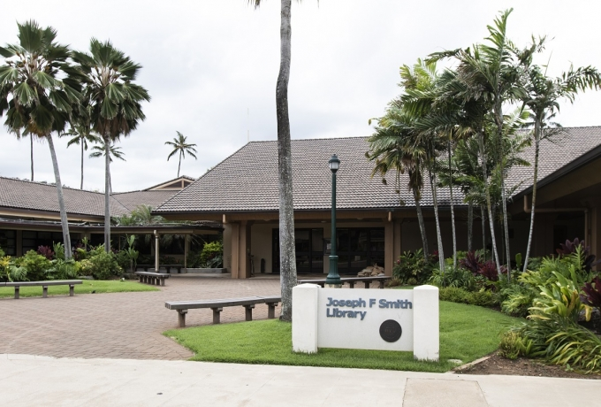
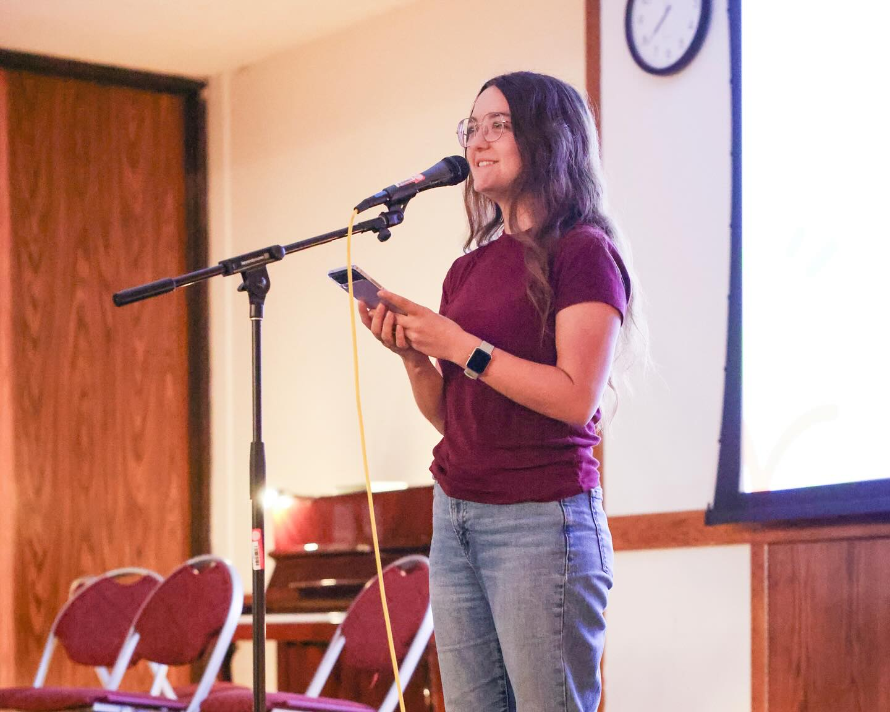
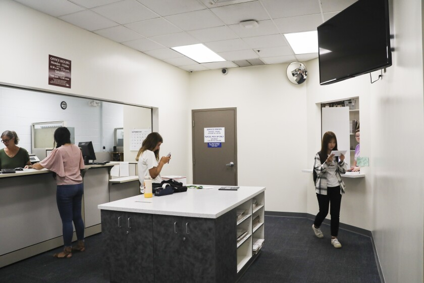
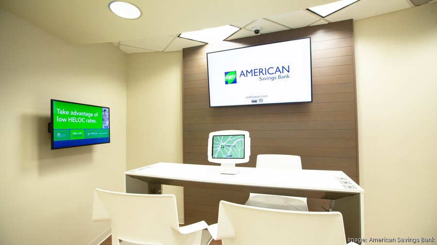
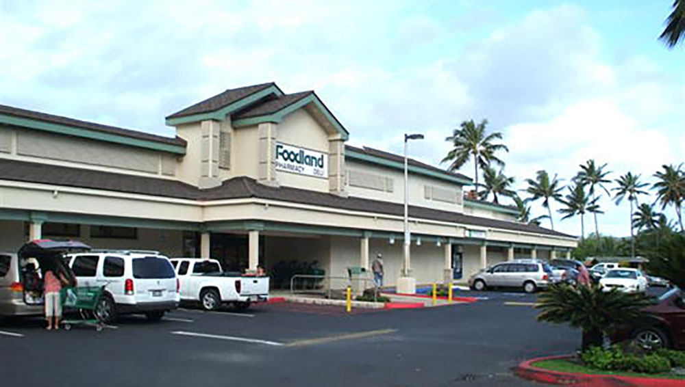

 Step 1: Take the 3 Canvas Courses
Where: Joseph F. Smith Library
When: Mon-Thurs 7am to 12am, Fri 7am to 8pm
Before arriving on campus, you are expected to finish three canvas courses:
- Title IX
- Honor Code
- New Student Orientation
If you haven't already, please complete these courses. Computers are available in the library. If you have not received any course invitation, please email orientation@byuh.edu.
Visit the Library's websiteStep 2: Tuberculosis Test
Where: Health Center
When: Monday, Tuesday, Wednesday, Friday: 8 am – noon; 2 pm – 4:45 pm Thursdays: 8 am – noon
Bring your vaccination records to the Health Center if you have not submitted your immunization records.
Visit the Health Center's website Step 3: One Stop Onboarding
Where: Aloha Center Room 155/156
When: Mon-Friday 8am to 3pm
Bring the following documents to the Aloha Center in printed AND pdf format:
- DS 2019
- I-19 or I-20
- Passport
- Visa
- Proof of Tuberculosis Test
The One Stop Onboarding process assists you in submitting all the required documents to establish your records on campus. Representatives from different departments will be available to assist you. We highly recommend that you bring a laptop.
 Step 4: Mailbox Number Setup
Where: Mail Center
When: Mon-Fri 9:00 am to 3:30 pm, Sat 9:00am to 12:00pm
Head over to the Mailing Center to get your mail box number so you can start getting mail on-campus. Be prepared to provide your email address.
Visit the Mail Center's websiteStep 5: Get Your Student ID
Where: Aloha Center Frontdesk
When: Mon-Fri 8am to 11pm, Sat 9am-1pm
After you have completed all of the previous steps, come to the Aloha Center information desk to get your student ID. Be prepared to provide your student ID number.
Visit the Aloha Center's website Step 6(Optional): Set Up A Bank Account
Where: American Savings Bank in Foodland
When: Mon-Sat 9:00am to 5:00pm
American Savings Bank is a popular bank among students. It is located in the Foodland grocery store. Some international students' bank accounts may not work in the U.S. If yours does not, we advise you to set up a new account for easy access to paychecks and bills. Be prepared to provide your Passport, DS-2019, Phone Number, and Email Address.
Visit the ASB website Step 7(Optional): Get a Holo Card
Where: American Savings Bank in Foodland
When: Mon-Sat 6:00am to 10:00pm
While you are at Foodland, consider getting a Holo Card, which is a prepaid card that can be used to pay for bus fees. The bus has routes connecting the campus to the whole island and is a convenient and cheap way to get around. Holo Cards can be purchased at the Foodland Customer Service Counter.
Visit the Foodland website